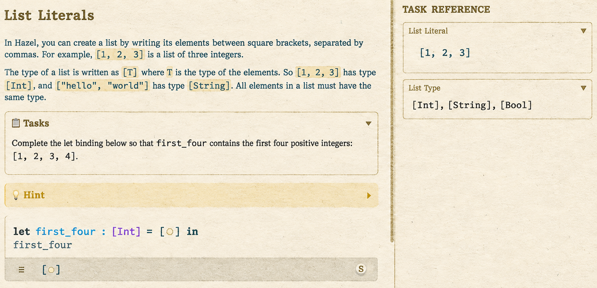
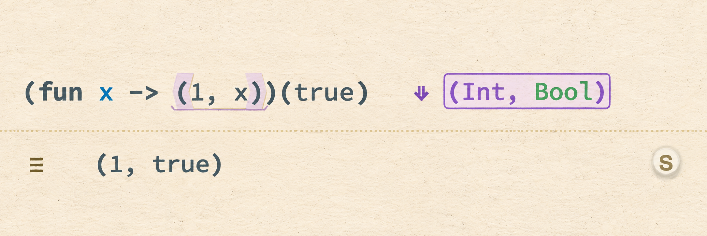
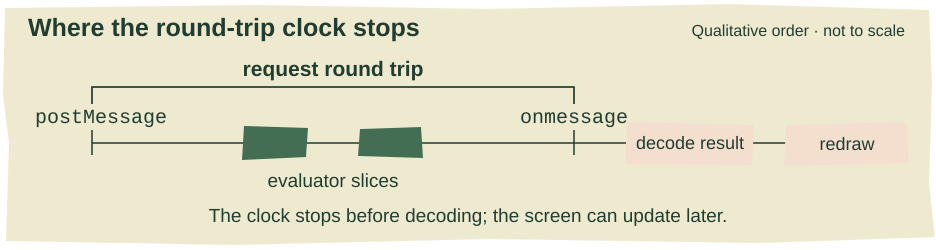
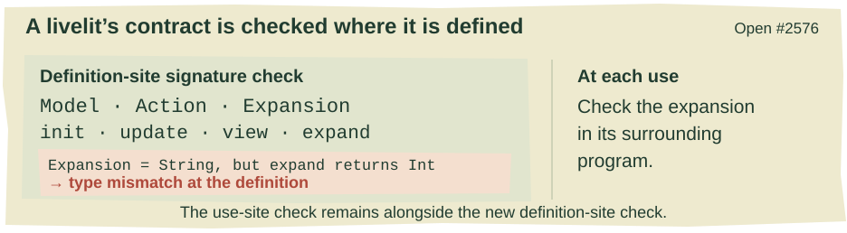
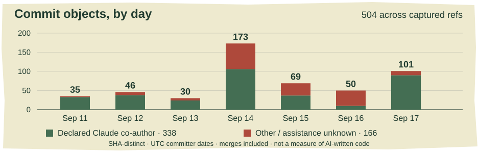

{kind=link}
A place to try.
Onboarding reaches dev. Runtime types add a new reading. Livelits acquire a checked interface, and a longer test run finds a short loop.
In this issue
MERGED INTO DEV / SEPTEMBER 15
Start with a gap
{kind=link}

{kind=link}
The new List Literals lesson: a fillable gap, the task, and a changing reference beside it. Dev build captured September 18; lesson left unsolved.
A fresh Hazel profile now opens in Tutorial mode. Beside the first program is a Task Reference panel, and the first assignment is small enough to fit in three lines: make 20 + an unfinished expression no longer, and make its result equal 42. The change is significant for anyone introducing Hazel to someone else: the first screen now asks the visitor to do something concrete. Existing profiles retain their saved mode. Alexander’s onboarding stack reached dev on September 15, combining the tutorial set, text authoring, and folder navigation. #2250, #2485, #2513
There are 28 lessons: 19 in Basics, three in Tuple Structural Operations, and six in Tables. The navigation arrows stay within the current folder. At its final lesson, the forward control becomes “Done!”; the folder dropdown takes you elsewhere. The Task Reference changes with the lesson, keeping useful operations beside the exercise instead of requiring a detour into the full language documentation. Prompts can contain Hazel code blocks, headings, and dividers. Tasks and hints are collapsible; an opened hint no longer carries its state into the next slide.
The first screen is only part of the change. Lessons now live in .hzt files with separate sections for their prompt, starter code, hints, reference material, and hidden tests. Editing an instruction no longer means dealing with a generated zipper dump. The original 25 lessons were mechanically converted; three Gradebook tasks recovered from tables-study extend the set. Their stable identifiers survive the move, so a title or folder change does not itself discard saved work. The recovered tasks are exercises, not solutions: Midterm Mean starts with a function-body hole, while Tidy Term begins with an identity stub.
MERGED INTO DEV / FOLLOW-THROUGH
The gap stays. The drawer closes.
One repair connects this landing directly to last week’s tutorial report. The List Literals lesson asks for the first four positive integers and starts with a gap inside brackets. Previously, loading the authored [¿] could erase that gap and leave []: deleting the marker produced a complete empty list, so the parser had no reason to restore anything. The temporary [?] workaround preserved an explicit hole tile, but students had to replace that tile instead of simply filling the gap.
Andrew’s fix now swaps the marker directly for Grout in place. It landed on September 14, and the merged tutorial already uses [¿] again. Six regression cases cover sole list elements, a nested list, parentheses, and an application argument, checking preservation both during parsing and after regrouting. This fixes the container case; the code still records a separate slow-parser gap for markers inside projector syntax. #2532
There are still limits to what the tutorial navigation can tell you. Folder completion is not recorded, and the checkmark calculation only knows the currently evaluated lesson. The folders organize the material; they are not yet a durable progress dashboard. Nor is this the full probes-study environment: its automatic probe setup and several study-specific settings were deliberately left out of this integration. The immediate result is a usable, editable onboarding sequence on dev, with fewer barriers to adding the next lesson.
Last week’s rich-probe report described a table disappearing when its drawer closed while the menu continued to offer “Hide table.” That particular mismatch is fixed. A rich view too tall to fit inline now loses its active renderer when the drawer closes; choosing “View as table” brings it back in one trip. Smaller views remain embedded in their chips. Selecting a different renderer also switches to it, rather than merely switching the old one off. #2534
Another Probes IV regression sat deeper in evaluation. Adding : ? to a recursive call made delegation bookkeeping copy the call stack at every level. A linear recursive sum accumulated quadratic work and memory. The fix keeps a stack reference and only declares delegations for probe targets. Andrew’s CLI measurements report the 12,800-frame example changing from heap exhaustion to 2.1 seconds on his machine. Alexander’s review asks for a further safeguard: regression tests that check expected linear behavior, since the reference-sharing assumption could be disturbed by refactoring. #2530
MERGED INTO DEV / SEPTEMBER 17
What the run can tell you
{kind=link}

{kind=link}
A staged example on dev: Int was known statically; green Bool comes from the sampled run. The result below is (1, true).
Alexander’s dynamic type projector merged into dev on September 17, adding a third reading beside Expected and Self. It infers a type from sampled values and colors the parts supplied by runtime green. PR #1858
Consider (fun x -> ^^statics((1, x)))(true). Inside the function, statics knows the pair’s first component is Int, while the second is unknown. Evaluation supplies (1, true). In Dynamic mode the projector can show (Int, Bool), with Bool green and Int in the ordinary type color. Double-clicking the offside type cell cycles through its readings; where there is no expected type, the cycle skips that reading. Merged projector implementation
That result describes the sampled run. The implementation runs statics over each sampled value in the expression’s context and meets the inferred types. It can therefore handle user-defined constructors as well as literals, without claiming that an observed type establishes what every possible execution will produce. If no samples arrived—or the sample types cannot meet—the display falls back to the static type without green additions. Turning Types off produces unavailable, keeping absent information distinct from an actual unknown type. Inference and tests
A substantial part of the final work was making those colors and samples trustworthy. Parentheses introduced by the type printer need identities too; otherwise a wholly runtime-derived type can have punctuation inexplicably left in the static color. The merged implementation prepares the type and computes its colored token IDs together, so the highlighted pieces belong to the rendering actually shown.
Review also caught cases where an annotation changed what a probe appeared to observe. In an if branch, a probe around f(3) : ? could report an unreduced application instead of 4. The fix preserves the inner ascription’s identity when annotations collapse, allowing the evaluator’s existing observation span to close on the final value. Another correction prevents an already-evaluated Int from being reported as Nat merely because the surrounding source uses use Nat. Both fixes landed during the week, ahead of the merge. Ascription correction, numeric-mode correction
MERGED INTO DEV / SEPTEMBER 15
Where did that edit spend its time?
{kind=link}

A qualitative timing map. Evaluation round-trip timing ends before response decoding and screen updates; the intervals are not to scale.
The Debug sidebar gained four telemetry sections when Alexander’s PR #2421 merged into dev on September 15: Evaluation, Statics, Editor & Memory, and Frame Timing. These expose work performed during an actual editing session. A slow edit can now be examined as several different costs instead of a single impression of sluggishness. PR #2421
Frame Timing separates applying an edit, statics and elaboration, rebuilding the syntax cache, calculating cursor information, and preparing ExplainThis colors. It keeps 30 recent frames. The total includes the edit’s update phase and the entire calculate phase; it is not just a sum of the displayed substage columns. An absent stage appears as a dash. The Statics section adds an outcome—recomputed, forced, deferred, or cached—so a skipped recomputation does not look like one that ran in zero time. Frame columns, statics outcomes
Evaluation asks a different question: how much time passed between posting work to the worker and receiving its result, compared with time spent inside the evaluator? The panel retains ten requests, with status and encoded payload sizes. Request IDs also connect its rows to Worker Messaging. A large gap between evaluator time and the round trip directs attention toward work around evaluation—queuing, serialization and transfer—rather than automatically blaming the evaluator. The round-trip clock stops at the message handler, before decoding the result; it is not a measurement of the complete delay until the screen updates. Collector
Editor & Memory supplies structural counts—tokens, tiles, rows and projectors—alongside undo, redo and backpack depth. It deliberately avoids walking the heap for byte-exact memory measurements. To try the panels, enable Debug Sidebar in the nut menu, open Debug, expand a telemetry section, and then edit or evaluate. Sections start collapsed. Main-thread collection is gated by the relevant open panels; the three per-frame views share a collector. The worker still measures evaluator slices regardless of whether Evaluation is expanded. These are tools for locating costs, not a claim that a particular operation has become faster. Counts, worker timing
OPEN PR / INTEGRATION/LIVELITS
A widget with a checked contract
{kind=link}

Source-derived interface sketch. Checking a widget definition and checking a particular expansion are separate steps; this remains branch work.
The user-defined livelit work has a new meeting point: Matt's open #2576, combining the livelit and HTML work with the first three Modules II parts. Its new contribution is a builtin Livelit signature. A definition chooses Model, Action and Expansion, then supplies init, update, view and expand with the corresponding types. Those members can now be checked together where the widget is defined.
For example, declaring Expansion = String while returning an integer from expand produces a definition-site mismatch. The check also handles an expand whose type is spelled through the module's Model alias: the implementation substitutes the definition's actual types on both sides of the comparison. Otherwise an unresolved alias could become ? and quietly permit the disagreement. Tests in the branch pin that case.
This gives an earlier answer to a question Alexander had raised on the expansion-typing PR, alongside Andrew's suggestion to use module features for the interface. Matt's closing account of #2488 connects that review to this week's implementation. The per-use expansion check remains. The signature check also leaves the expansion type visible to clients; sealing it away would defeat the program's ability to use the widget's result.
The Emotion example makes those layers concrete. Dragging the face updates a model containing an integer and a drag state. Its expansion is a Mood, with alternatives such as Happy(Very) and Sad(Somewhat). A probe displays that value, and an ordinary Hazel function turns it into a greeting. The widget, the data and the surrounding program can be read together.
This remains branch work. The larger Tree Care example exposes serious responsiveness problems reported in the PR, and #2580 reserves the next line of work for splices and SpliceRef; its title is not evidence that either integration is complete.
OPEN PRS / EXPERIMENTAL BRANCHES
An address, a history, a pause
Send the place, too. An instruction to open a particular slide can still leave a colleague navigating from whatever Hazel last remembered. Matt's open deep-links PR adds location to the URL: documentation slide, sidebar panel, caret or selection. For example, ?slide=polymorphism&panel=probes opens the slide with Probes visible. Adding &select=3-5 selects those three lines. “Copy URL” in the context menu builds a link for the term under the cursor.
That also shortens the edit–reload loop: the address continues to specify the view being tested. The change has already been cherry-picked into the livelit integration branch, where its PR links directly to worked examples.
Alexander's review comment draws the next distinction: a slide name describes a location, whereas encoded contents describe a particular program. A build SHA, contents and selection together would make a stronger reproducible example. Today's links do not promise that. They address documentation slides rather than tutorials, and a reported startup-layout bug can leave a target below a block projector several rows short of the intended scroll position.
Which pass touched the store? The Fumola integration now distinguishes why Hazel ran a foreign program. The motivating observation was awkward: enabling the stepper could run it again while finding the next redex. A store history needed to distinguish that inspection from ordinary evaluation.
The design changed during #2566. An initial version wrote a marker cell before each run. The committed version instead assigns runs ordered moments, hazel(1), hazel(2) and onward, and keeps their pass names in a Hazel-side table. The panel associates history with those moments without adding a bookkeeping cell to the store.
That depended on correcting an earlier interpretation of Fumola's times. Matt's September 14 commit reports checking that a later comparable moment can read an earlier write while its own writes leave that earlier moment intact. Readers therefore move to the latest moment, too. The change makes multiple passes visible; it does not establish that unwanted repeat execution is fixed.
Two accompanying changes make the inspector easier to interpret: #2568 asks the runtime which mode an instance currently uses, and #2569 supplies form-specific syntax, behavior and origins in the cursor inspector. All three merged into experimental-lang-integration, not dev. That integration remains a draft, explicitly outside the current livelit priority.
Blackboard: working checker, paused branch. Blackboard progressed from last week's kernel/editor-sort introduction to live checking per signature entry, with errors carried into the inspector and Problems sidebar. Its construction forms still do not discharge proof obligations: by proof remains a placeholder. On September 17 Matt closed #2525 without merging, explaining that the active priority is user-defined livelits. The branch and its implementation remain available; the closure is a scope decision, not evidence that the checker failed.
TESTING / A NEW FAILURE AND ITS FOLLOW-UP
A longer search finds a loop
{kind=link}
Fiction department: two aliases refer an increasingly well-informed visitor to one another. Inspired by the cycle in issue #2570.
Extended Tests now has a weekly Sunday schedule, but its first result this week came from a manual run. With the property-test multiplier set to 100, it found a mutually recursive cycle of type aliases that exhausts weak_head_normalize and crashes statics. The resulting issue includes a compact reproducer and the seed needed to repeat the search. The crash remained open at the reporting cutoff. More random examples found a concrete failure; this is not a timing claim about every test in the suite. #2516, #2570
The reproducer is type y = x in type x = y in (1 : y). Each alias points to the other. Following either name leads back to the first; normalization never reaches a non-alias type. The tiny program gives the extended run’s failure a form that can be kept as a regression case.
A follow-up adds a rolling tracker issue for failed scheduled runs, with failing cases, seed, factor, and artifact links. Copilot’s review identified that issue-writing permission would also reach the branch code under test. Alexander split notification into a separate job, leaving the build-and-test job read-only. The landed workflow contains that separation; end-to-end tracker creation still needs its first real run. #2573
Two smaller testing changes clarify what the suite is promising. #2562 adds regression cases for six old bugs that had already stopped reproducing; it does not represent six new fixes. #2523 turns three statistics-only surveys into compiled but disabled properties, because the claimed properties have counterexamples. A reassuring distribution is not yet an invariant.
One small printing fix has an especially concrete consequence. Keyword-shaped labels now keep their backticks when printed, so a tuple field named type remains parseable after a round trip. Four cases cover expressions, projections, patterns and types. #2531
SEPTEMBER 11–17 / A BRANCH CENSUS
The week in numbers
{kind=link}

SHA-distinct reachable commit objects by committer date. Green marks declared Claude co-authors; the remaining segment includes unknown assistance.
Daily counts as a table
| Date | All | Declared Claude co-author |
|---|---|---|
| 2026-09-11 | 35 | 33 |
| 2026-09-12 | 46 | 38 |
| 2026-09-13 | 30 | 24 |
| 2026-09-14 | 173 | 106 |
| 2026-09-15 | 69 | 37 |
| 2026-09-16 | 50 | 10 |
| 2026-09-17 | 101 | 90 |
The week closed with 13 PRs merged into dev, five merged into named feature branches, and 29 newly opened PRs. These are PR records: the three tutorial PRs share one integration commit. Eleven new PRs were drafts at retrieval; draft status can change after cutoff.
The branch census finds 504 distinct commit objects reachable from 699 captured remote branch tips, with committer timestamps in September 11–17 UTC: 367 non-merge commits and 137 merges. Thirty-six branch tips have in-window committer dates. These describe retained history, not push counts or independently active projects.
338 commits carry a Claude/Anthropic co-author declaration; none carry the OpenAI/Codex/ChatGPT declarations recognized by this census. Separately, 209 contain a cryptographic signature header. These groups can overlap. A trailer declares assistance, while a signature is a different property; neither count measures the amount of code written by an agent. Missing declarations leave assistance unknown, including work done with tools that do not add a trailer.
The busiest retained-history day was Monday, September 14, with 173 commit objects. Merges, rebases and cherry-picks help shape that number, so it should not be read as a measure of effort. Matthew Hammer, Alexander Bandukwala and Andrew Blinn recur across the selected stories; the broader commit census also includes Russell Rozenbaum, Matt Keenan, Akshay Valoor and Cyrus Omar.
Reporting window: September 11–17, 2026 UTC; records captured September 18. Selected stories use cutoff code and dated discussion. Issue flows use saved timestamps rather than a complete close/reopen event history. The 347 outstanding issues are a retrieval-time count.
AI editor: Astra. Reporting audits: Astra agents covering teaching and repairs, projectors and telemetry, and experimental branches. Illustrations and screenshot treatments: ImageGen. The original-UI edition and the web image switches preserve the authentic screenshots.